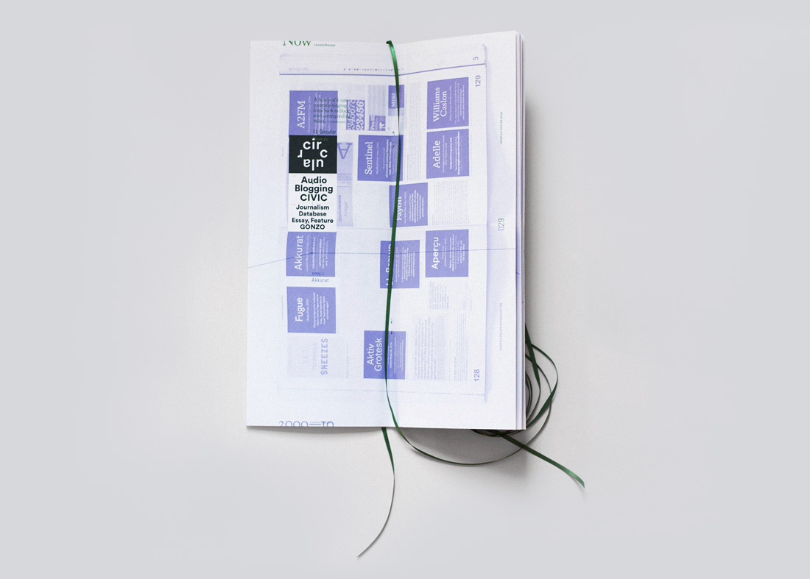
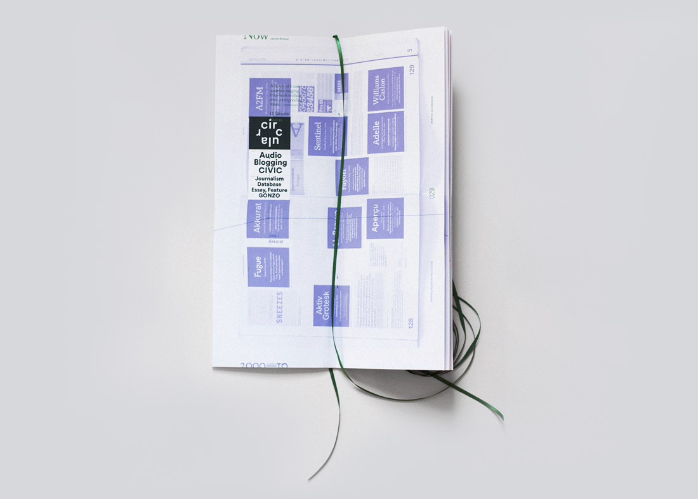
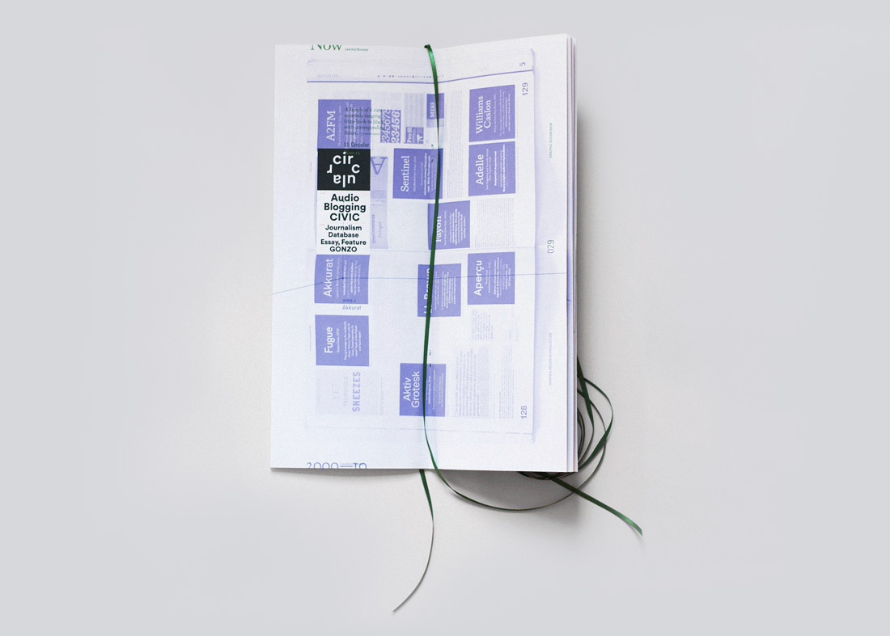

To solve this problem, at least in the short term, I decided to append the show. Now Production Graphic in Design: is essentially an infographic guide that uses the existing catalog to both reorder the work chronologically and provide an update of it. I aimed to capture that precise moment in the show's life: the RISD Museum was the last stop before it closed for good, so the book presents the nowest 'now' the show ever had.
Now Production Graphic in Design: responds to the size of the original catalog, then takes on its own life from there. The extra long bookmark is a pun on the idea of the timeline.
